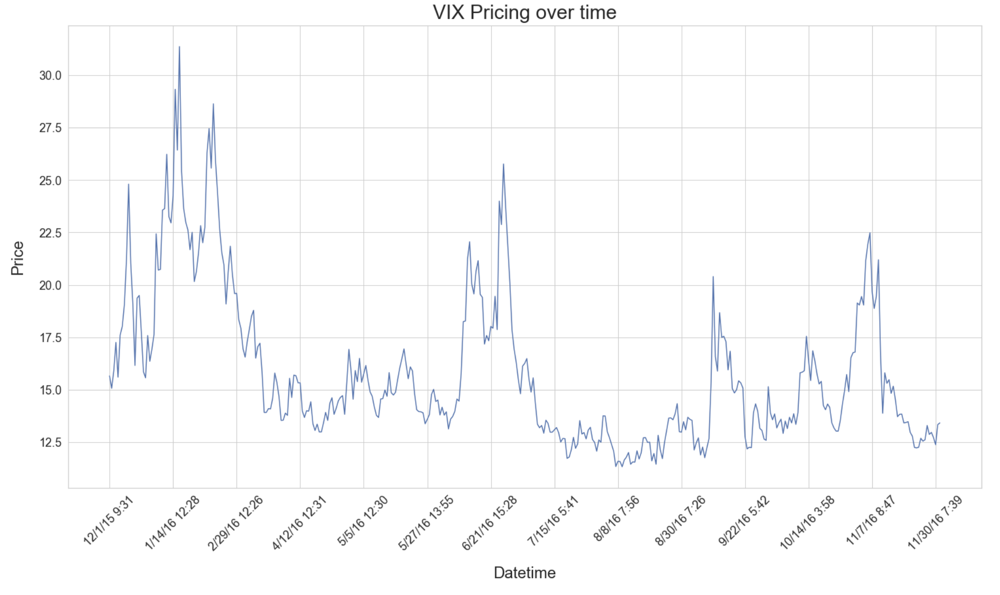

Data Exploration
Table of contents
Data Collection and Cleaning
We pulled all of Trump's tweets in the last few years from his Twitter archive. Due to the naature of the database, we spent much time cleaning this data for our purposes. We took the following steps to clean the data:
- Importing raw data from the archive
- Removing unnecessary columns
- Adjusting GMT to Eastern Time + accounting for daylight savings
- Manually fixing errors in cells where the delimiting was incorrectly done in the database output and manually re-inserting the delimiting character
We utilized ntlk's textblob function in order
to analyze the sentiment of tweets in our data set. For each tweet, this function created a polarity score (the more positive
a tweet is, the closer the score is to 1; the more negative, the closer it is to -1). The function also returns a subjectivity
score. Lower subjectivity score means that the tweet's polarity score more objectively represents its sentiment.
VIX
VIX is the first benchmark index to measure expectations of future market volatility (based on S&P 500 options). Since Milestone 2, we have procured minute-by-minute VIX data from 12/2015 - 11/11/2019. This data includes only VIX pricing on trading days throughout the past few years (excludes holidays, weekends, etc.). We manually pulled the data from a Bloomberg Terminal at HBS Baker Library. Given the size of the dataset and the Terminal download limits, we manually copied and pasted the VIX data directly into a csv file. Note that all other sources of VIX data are at best day-by-day and typically cost a nontrivial amount.
VIX is managed by CBOE (Chicago Board Options Exchange). The global trading hours for VIX can be found here. Trading hours range from 3:15 am EST until 4:15 pm EST. There is a break bewteen 9:15 and 9:30 am, but this is addressed in how we consolidate our data.
Consolidated Data
In order to consolidate the data, we merge our Twitter and VIX dataframes on date/time to ensure that we are only looking at tweets that are posted during VIX trading hours. That way, we do not have to worry about tweets occurring outside these hours. Also, when we look at the change in VIX price, we are only looking at changes during trading hours, so examining only tweets that are posted during trading hours allows us to perform this analysis soundly.
from textblob import TextBlob
tweets = twitter_archive_df['text']
tweets_list = [tweet for tweet in tweets]
big_tweet_string = ' '.join(tweets_list)
tokens = word_tokenize(big_tweet_string)
words = [word.lower() for word in tokens if word.isalpha()]
stop_words = set(stopwords.words('english'))
words = [word for word in words if not word in stop_words]
scores = []
subjectivity = []
for tweet in tweets_list:
blob_tweet = TextBlob(tweet)
sentiment = blob_tweet.sentiment
score = sentiment[0]
subject = sentiment[1]
scores.append(float(score))
subjectivity.append(float(subject))
twitter_archive_df['sent_score'] = scores
twitter_archive_df['subjectivity'] = subjectivity
# twitter_archive_df.head()
Data Description
Our data includes the following features:
danceability: Danceability describes how suitable a track is for dancing based on a combination of musical elements including tempo, rhythm stability, beat strength, and overall regularity. A value of 0.0 is least danceable and 1.0 is most danceable.energy: Energy represents a perceptual measure of intensity and activity. Typically, energetic tracks feel fast, loud, and noisy. For example, death metal has high energy, while a Bach prelude scores low on the scale. Perceptual features contributing to this attribute include dynamic range, perceived loudness, timbre, onset rate, and general entropy. A value of 0.0 is least energetic and 1.0 is most energetic.key: The estimated overall key of the track. Integers map to pitches using standard Pitch Class Notation. E.g. 0 = C, 1 = C♯/D♭, 2 = D, and so on. If no key was detected, the value is -1.loudness: The overall loudness of a track in decibels (dB). Loudness values are averaged across the entire track and are useful for comparing relative loudness of tracks. Loudness is the quality of a sound that is the primary psychological correlate of physical strength (amplitude). Values range between -60 and 0 db.mode: Mode represents the modality (major or minor) of a track, the type of scale from which its melodic content is derived. Mode is binary; major is represented by 1 and minor is 0.speechiness: Speechiness detects the presence of spoken words in a track. The more exclusively speech-like the recording (e.g. talk show, audio book, poetry), the closer to 1.0 the attribute value. Values above 0.66 describe tracks that are probably made entirely of spoken words. Values between 0.33 and 0.66 describe tracks that may contain both music and speech, either in sections or layered, including such cases as rap music. Values below 0.33 most likely represent music and other non-speech-like tracks.acousticness: A confidence measure from 0.0 to 1.0 of whether the track is acoustic. 1.0 represents high confidence the track is acoustic.instrumentalness: Predicts whether a track contains no vocals. “Ooh” and “aah” sounds are treated as instrumental in this context. Rap or spoken word tracks are clearly “vocal”. The closer the instrumentalness value is to 1.0, the greater likelihood the track contains no vocal content. Values above 0.5 are intended to represent instrumental tracks, but confidence is higher as the value approaches 1.0.liveness: Detects the presence of an audience in the recording. Higher liveness values represent an increased probability that the track was performed live. A value above 0.8 provides strong likelihood that the track is live.valence: A measure from 0.0 to 1.0 describing the musical positiveness conveyed by a track. Tracks with high valence sound more positive (e.g. happy, cheerful, euphoric), while tracks with low valence sound more negative (e.g. sad, depressed, angry).tempo: The overall estimated tempo of a track in beats per minute (BPM). In musical terminology, tempo is the speed or pace of a given piece and derives directly from the average beat duration.duration_ms: The duration of the track in milliseconds.time_signature: An estimated overall time signature of a track. The time signature (meter) is a notational convention to specify how many beats are in each bar (or measure).popularity: The popularity of a track is a value between 0 and 100, with 100 being the most popular. The popularity is calculated by algorithm and is based, in the most part, on the total number of plays the track has had and how recent those plays are.Generally speaking, songs that are being played a lot now will have a higher popularity than songs that were played a lot in the past.in_playlist: Response variable. Categorical variable for whether in playlist of desire. 1 if in playlist, 0 if not in playlist.
The following features were recorded to help with visualization later, but not used as predictors in our analysis, as they are not characteristics of the music itself.
name: Song titleartist: First artist of songtype: The object type, always deemed ‘audio_features.’id: The Spotify ID for the track.uri: The Spotify URI for the track.track_href: A link to the Web API endpoint providing full details of the track.analysis_url: An HTTP URL to access the full audio analysis of this track. An access token is required to access this data.
Exploratory Data Analysis
We did an initial analysis of some keywords, as shown in our notebook. The list is ['trade', 'Trade', 'deal', 'products', 'manufacturing', 'China', 'Xi', 'Xi Jinping', 'CCP', 'Communist Party', 'Beijing']`. Approximately 1/10 of Trump’s tweets that we cleaned (of ~14,000 total) contain some combination of these keywords. As we see above, the majority of the 'keywords' (based on our initial keyword list) appearing in our data are trade, Trade, deal, China, and Xi (products and manufacturing not far behind). CCP, Communist Party, and Beijing do not show up that frequently. In the future, we will probably employ functionality to search for the most frequently appearing useful words (excludes articles, punctuation, etc.). The histogram is reproduced below:

INSERT EDA FOR TWITTER DATA USING TEXTBLOB ANALYSIS - SEE TRENDS IN SENTIMENT SCORES
Next, we examine the VIX data. Below are summary statistics for the data we were able to pull and consolidate from Bloomberg.
Just based on the above, we can see a pretty large range in the values of the VIX, suggesting that the pricing jumps around a lot. At the same time, though, we see that on a minute by minute basis, the price change is very small. We keep this in mind when developing our models because even though are outcome is price delta, we experiment with different time intervals over which that delta is calculated to see which model will be most useful.
Additionally, in our EDA, we looked at a snippet of the VIX pricing data. Our thought process was before diving into any analysis, we should first determine when the VIX rose or fell significantly and see if those changes appear to be related to any significant news events around those times. Our initial graph of the VIX data looks at EOD VIX pricing over a set period of time (December 1, 2015 - December 1, 2016). (Our analysis will hone in on minute by minute, but for us, it is important to be aware of the major surges). This graph is not reproduced below because of its size, but it can be seen in the notebook (title: “VIX Pricing over time”). The following were the main surges during this time period:
- 12/11/15
- 1/19/16
- 2/11/16
- 6/14/16
- 6/27/16
- 9/12/16
- Two weeks before 2016 Presidential elections and a week afterwards
- Oil Prices Reaching Seven Year Lows
- Wall St. makes worst start to year, global bearishness, oil resumes slide, Fed might raise interest rates again
- Very mixed news, articles suggest renewed China risks due to China’s unruly peer-to-peer lending — 21 people arrested involved in “a complete Ponzi scheme” — ballooned in size last year as credit-starved private companies paid swingeing interest rates to secure loans
- Weak jobs data, major uncertainty regarding Fed hiking interest rates
- Post-Brexit jitters
- Oil price hikes, Merkel loses major state election in response to her open-door refugee policy
- Three major moves: first, as polling data shows narrowing of Clinton’s lead, the VIX continuously climbs, one of its more significant spikes being the day Fed reopened the investigation into her emails, secondly, one of VIX’s more significant downturns (though, still mild relative to the climbs of the previous weeks) was when the investigation was officially closed, and thirdly when Trump won, the VIX surged upwards, only to calm the day after when trading resumed, which was the exact trend following the Brexit vote.
Note that the moves above are not directly related to Trump's tweets, but they did give us a sense for how striking news could affect VIX pricing on a minute by minute basis.

Looking at the density plots above, we note some features that show clear differences in distribution between the playlist and non-playlist. While non-playlist songs contain a roughly uniform distribution of energy values, playlist songs spike at an energy level between 0.2-0.4. Acousticness in playlist tracks is much higher on average, spiking around 0.8, while non-playlist tracks most frequently have acousticness values around 0.1. Instrumentalness is a particularly interesting feature. While the distribution non-playlist tracks is bimodal, peaking at around 0 and 0.9, playlist tracks have a few very well-defined peaks between 0 and 0.3. We will note in advance that this may induce a risk of overfitting based on instrumentalness values. Playlist tracks have lower loudnesses on average, centering around -10, while non-playlist tracks -5. In terms of speechiness, the distribution for playlist tracks has a much lower variance and slightly lower expected value, centering around 0.3 while non-playlist tracks center around 0.4. Valence for non-playlist tracks is roughly uniformly distributed, while playlist tracks demonstrate a roughly normal distribution centered around 0.3. Finally in terms of popularity, playlist tracks show a peak in their distribution around 60, while non-playlist tracks have a more variable distribution with a peak between 45-55. The rest of the features are roughly similar in distribution between playlist and non-playlist tracks.

The pairplot above demonstrates a few interesting things. First, we notice weakly positive correlations between loudness and energy, loudness and danceability, and danceablility and loudness. We also notice a negative correlation between acousticness and energy. These correlations will be useful to keep in mind if we conduct variable selection or regularization at a later point. Also, none of these pairwise plots show clear separability between the two playlists.